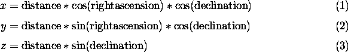

MainHomeIntroduction Features Screenshots Downloads Purchase FG CD's SupportVersion Change LogHardware Requirements Documentation Places to Fly Lists, Forums, and IRC FAQ LinksRelated WebsitesRelated Projects ContributeContributingCVS Resources Goals Contributors Design Proposals Events |
Flight Gear Stars Representation and Rendering.Curtis L. Olsoncurt@flightgear.org
IntroductionFlight Gear attempts to render the top several hundred stars in the correct position in the sky for the current time and position as will as rendering these stars with the correct ``magnitude''. This document will give a quick overview of our approach.
Resources
XEphemThe set of bright stars was extracted from the xephem program. For a full list of features and the latest news, please see the xephem home page at http://iraf.noao.edu/ ecdowney/xephem.html. The XEphem star list was itself taken from the Yale Bright Star Catalog.
Based on the 5th Revised edition of the Yale Bright Star Catalog, 1991, from ftp://adc.gsfc.nasa.gov/pub/adc/archives/catalogs/5/5050. The author of XEphem, Elwood Downey (ecdowney@noao.edu), was very instrumental in helping me understand sidereal time, accurate star placement, and even contributed some really hairy sections of code. Thanks Elwood!
Terminology and DefinitionsThe following information is repeated verbatim from http://www.lclark.edu/ wstone/skytour/celest.html: If you are interested in these sorts of things I urge you to visit this site. It contains much more complete information.
Celestial MeasurementsAlthough we know that the objects we see in the sky are of different sizes and at different distances from us, it is convenient to visualize all the objects as being attached to an imaginary sphere surrounding the Earth. From our vantage point, the sky certainly looks like a dome (the half of the celestial sphere above our local horizon). The celestial sphere is mapped in Right Ascension (RA) and Declination (Dec).
DeclinationDeclination is the celestial equivalent of latitude, and is simply the Earth's latitude lines projected onto the celestial sphere. A star that can be directly overhead as seen from the Earth's Equator (0 degrees latitude) is said to be on the Celestial Equator, and has a declination of 0 degrees . The North Star, Polaris, is very nearly overhead as seen from the North Pole (90 degrees North latitude). The point directly over the North Pole on the celestial sphere is called the North Celestial Pole, and has a declination of +90 degrees . Northern declinations are given positive signs, and southern declinations are given negative signs. So, the South Celestial Pole has a declination of -90 degrees .
Right Ascension & Sidereal TimeRight Ascension is the equivalent of longitude, but since the Earth rotates with respect to the celestial sphere we cannot simply use the Greenwich Meridian as 0 degrees RA. Instead, we set the zero point as the place on the celestial sphere where the Sun crosses the Celestial Equator (0 degrees Dec) at the vernal (spring) equinox. The arc of the celestial sphere from the North Celestial Pole through this point to the South Celestial Pole is designated as Zero hours RA. Right Ascension increases eastward, and the sky is divided up into 24 hours. This designation is convenient because it represents the sidereal day, the time it takes for the Earth to make one rotation relative to the celestial sphere. If you pointed a telescope (with no motor drive) at the coordinates (RA=0h, Dec=0 degrees ), and came back one hour later, the telescope would then be pointing at (RA=1h, Dec=0 degrees ). Because the Earth's revolution around the Sun also contributes to the apparent motion of the stars, the day we keep time by (the solar day) is about four minutes longer than the sidereal day. So, if you pointed a telescope at (RA=0h, Dec=0 degrees ) and came back 24 hours later, the telescope would now be pointing at (RA=0h 4m, Dec=0 degrees). A consequence is that the fixed stars appear to rise about four minutes earlier each day.
ImplementationHere is a brief overview of how stars were implemented in Flight Gear. The right ascension and declination of each star is used to build a structure of point objects to represent the stars. The magnitude is mapped into a color on the gray/white continuum. The points are positioned just inside the far clip plane. When rendering the stars, this structure (display list) is rotated about the Z axis by the current sidereal time and translated to the current view point.
Data file formatThe star information is stored in a simple data file called ``Stars.dat'' with the following comma delimited format: name, right ascension(radians), declination(radians), magnitude(smaller is brighter). Here is an extract of the data file:
Sirius,1.767793,-0.266754,-1.460000 Canopus,1.675305,-0.895427,-0.720000 Arcturus,3.733528,0.334798,-0.040000 Rigil Kentaurus,3.837972,-1.032619,-0.010000 Vega,4.873563,0.676902,0.030000 Capella,1.381821,0.802818,0.080000 Rigel,1.372432,-0.136107,0.120000 Procyon,2.004082,0.091193,0.380000 Achernar,0.426362,-0.990707,0.460000
Building the display listThe display list is built up from a collection of point objects as the star data file is loaded. For each star, the magnitude is mapped into a brightness value from 0.0 to 1.0 with 1.0 being the brightest. Our coordinate system is described in the coordinate system document: Z points towards the North pole, X out of the 0 degree meridian at the equator, and Y out at the Indian ocean at the equator. Given this coordinate system, the position of each star at 0:00H sidereal time is calculated as follows:
 Transformations and RenderingThe tricky part about rendering the stars is calculating sidereal time correctly. Here's where Elwood Downey saved my butt. 0:00H sidereal time aligns with 12:00 noon GMT time on March 21 of every year. After that they diverge by about 4 minutes per day. The solar day is approximately 4 minutes longer than the side real day. Once you know the proper sidereal time, you simply translate the center of the star structure to the current view point, then rotate this structure about the Z axis by the current sidereal time. The stars are drawn out by the far clip plane so they don't occult anything. They are translated using the same x/y/z as the eye point so that you can never fly any closer to them.
About this document ...Flight Gear Stars Representation and Rendering. This document was generated using the LaTeX2HTML translator Version 96.1 (Feb 5, 1996) Copyright © 1993, 1994, 1995, 1996, Nikos Drakos, Computer Based Learning Unit, University of Leeds. The command line arguments were: The translation was initiated by Curtis L. Olson on Sun Dec 14 11:31:19 CST 1997 Curtis L. Olson Sun Dec 14 11:31:19 CST 1997 |